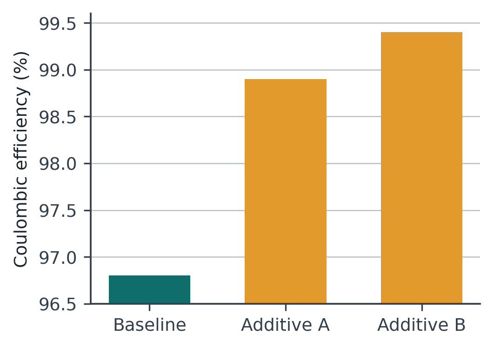
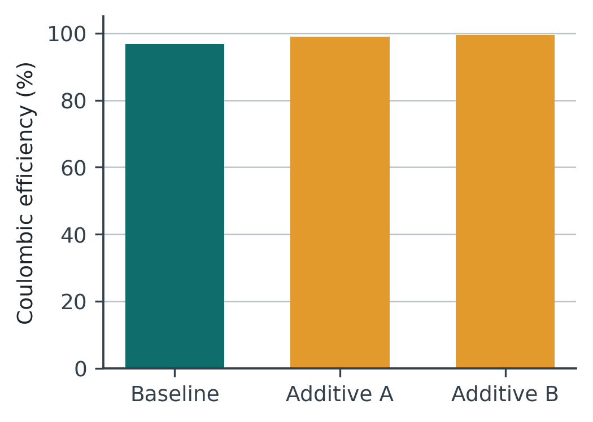

Reverse-engineering III — Methods, Results, and evidence
Week 6 · 2105620 Research Communication Skills for Chemical Engineers
10 September 2026
Two hours, and the last one before the examination
Today
- 8 min What the midterm covers, so we can stop thinking about it
- 20 min Reporting and interpreting: where the line is
- 20 min Activity 1 — report, or interpret?
- 10 min Break
- 20 min Six ways a figure misleads
- 25 min Activity 2 — figure forensics
- 12 min Debrief and close
Everything used today is on the sheet. Nothing needed to be brought.
The examination
24 September to 4 October · Weeks 1 to 6 only
Analysis of published work. Not recall of definitions.
What it asks you to be able to do
Six capabilities, one per week
- Name what an article type is for, and who reads it
- Apply the authorship criteria and the AI policy to a case
- Write a reproducible search, and read a gap out of a matrix
- Reverse-outline a section and name a structural break
- Tell an absence from a gap, and write an aim a result can settle
- Separate reporting from interpretation, and find a distortion in a figure
Every one of these is something you did in a room with your hands. None of them is a definition.
Where the line is
Block 2 · 20 minutes
The Results section reports what was observed. Everything else belongs somewhere else.
Could a machine with no knowledge
of chemistry have written this sentence
from the raw data?
If yes, it reports. If it needed a person to decide something, it interprets.
The four verbs that give it away
Words that smuggle a claim into the Results
| attributed to | Names a cause. Nothing was observed |
| indicating | An inference. Usually true, usually not measured here |
| confirming | The strongest verb available, and one micrograph does not earn it |
| excellent, superior, remarkable | Judgements. Excellent against what, reported by whom? |
None of these is dishonest. All of them belong two sections further on, where the reader knows to be sceptical.
Report, or interpret?
Activity 1 · 20 minutes · five sentences on your sheet
What to do
Activity 1
- 10 minutes alone. Five sentences. Mark each: reports, interprets, or both
- Where it interprets, rewrite it so the Results can keep it, or say where it should move
- 5 minutes in pairs. Compare. One of the five splits the room every year
All five read well. Four of them would pass a supervisor and a language check. That is the point.
10
Break · back at the time on the board
Six ways a figure misleads
Block 3 · 20 minutes
None of these looks like a mistake. Every one of them is a default setting somebody failed to override.
The six
In roughly the order you will meet them
| Truncated axis | A bar chart not starting at zero. A 2 % difference fills the panel |
| Dual axes | Two quantities, two scales chosen by hand. Any two curves can be made to agree |
| No uncertainty | No error bars, no n. The difference may be inside the scatter |
| Selective range | The measurement continued. The axis did not |
| False resolution | A smooth curve through four points, with a feature labelled between them |
| Image reuse | The same micrograph, rotated, in two panels. This one ends careers |
Two of them, side by side
Same data, two axis choices


Nothing was fabricated. One number was changed: where the axis begins.
Figure forensics
Activity 2 · 25 minutes · in pairs
What to do
Activity 2
- Five figures on your sheet. Each contains one distortion
- For each, two answers. What is wrong · what a reader would wrongly conclude because of it
- Then the three questions at the end. The third one is the one that matters
Drawn for this exercise, in our own figure style, with invented data. Not from any published paper.
What you found
Debrief
| 1 | Axis starts at 96.5 %. A 2.6-point difference fills the panel |
| 2 | Twin axes, right one inverted, ranges chosen so the curves overlay |
| 3 | No error bars and no n. The difference sits inside the scatter |
| 4 | Measured to 900 cycles, plotted to 500. It fails at 520 |
| 5 | Four measured points, a smooth curve, an optimum labelled between two of them |
Four of these mislead using data that is entirely present. One withholds data that was collected.
Have you drawn any of
these five yourself?
I have. Twice.
Before the examination
Three things
- The evidence map is due before Week 7, which is next week. Start from the four rows you already have
- Assignment 1 and the Week 4 outline come back to you before the examination period
- Week 7 is Prof. Supareak — the manuscript blueprint. Bring the three sentences and the aim from last week
Examination 24 September to 4 October, Weeks 1 to 6. Week 8 resumes on 8 October.
Before you go · 45 seconds
How was today?
Five questions. Anonymous — no name, no email, no login.
The fourth question is the one I actually use.
The two most common answers open next week’s session.
oxidized-challenge-ed9.notion.site

Scan now — I will wait